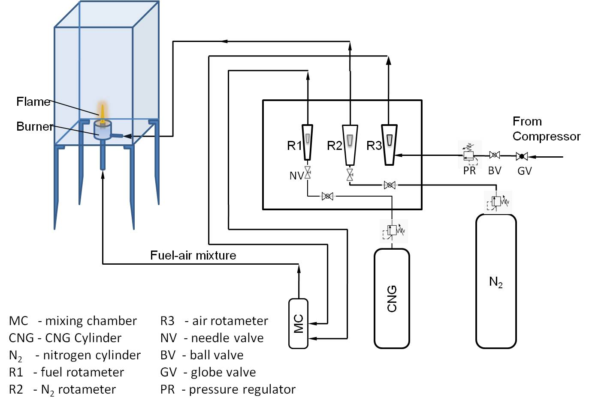

Experimental Setup

- The burner has to be kept in an enclosed chamber to avoid the entrainment of ambient air.
- The burner has two inlets; one for the fuel-air mixture and the other one for nitrogen gas, which will act as a curtain to the flame.
- Rotameters are employed to measure the flow rate of fuel and air supplied to the burner.
- The supply air and fuel is controlled through a fine control needle valve, fitted just before the rotameters.
- Care should be taken to calibrate the measuring equipments before using in the experimental setup.
- Camera has to be kept sufficient distance away from the flame.
- Ensure burner alignment with the help of sprit level.
Experimental Procedure
- Open the air inlet valve.
- Set the desired pressure in the inlet pressure regulator.
- Fix the fuel flow rate to a desired level.
- Now open the needle valve and set the air flow with the help of rotameter to obtain the specified equivalence ratio.
- Now ignite the mixture at the burner exit.
- Wait for sometime till no further changes in the flame shape is observed.
- Acquire the flame image through image recording system.
- Ensure that the camera is aligned properly to avoid systematic errors.